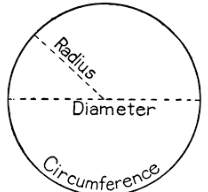
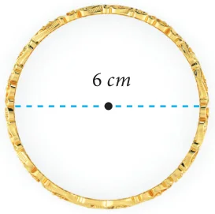
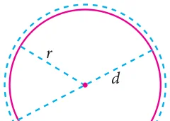
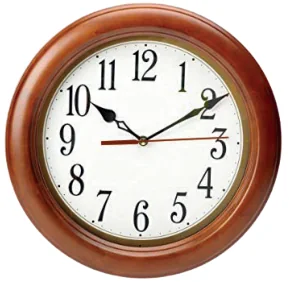
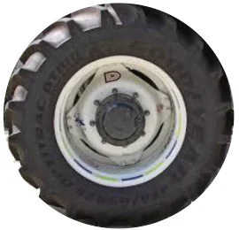
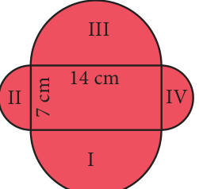
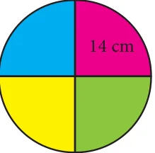
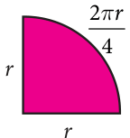

All circles are similar to one another. So, the ratio of the circumference to that of diameter is a constant, that is Circumference = constant [say p (pi)] Diameter Its approximate value is 3.14. Therefore \(\frac{C}{d} = \pi\) . The diameter is twice the radius (2r), so the above equation can be

written as \(\frac{C}{2r} = \pi\) .
Therefore, the circumference of circle, \(C = 2\pi r\) units. Fig. 2.4
Obviously now, we see that Circumference, \(C = \pi d\) and \(d = 2r\) . Thus for any circle with a given 'r' or 'd', we can find 'C' and vice-versa.
- Calculation of decimal digits of p is an interesting task among mathematicians.
- The constant p was used in the construction of popular pyramids of Egypt.
- Computers helped mathematicians to calculate the value of
p with more than 12 trillion decimal digits.
Think
A circle has the shortest perimeter of all closed figures with the same area. Justify with an example.
Example 2.1 Calculate the circumference of the bangle shown in Fig. 2.5 (Take \(\pi = 3.14\) ).
Solution

Given, \(d = 6\) cm , \(d = 2r = 6cm\), \(r = 3\) cm
Circumference of a circle \(= 2\pi r\) units
\(= 2\pi \times 3 = 18.84\)
The circumference is 18.84 cm. Fig. 2.5
Example 2.2 What is the circumference of the circular disc of radius 14 cm?
(use \(p = \frac{22}{7}\) )
Solution
Radius of circular disc (r) =14 cm Circumference of the disc \(= 2\pi r\) units
\(= 2 \times \frac{22}{7} \times 14 = 88\) cm
Example 2.3 If the circumference of the circle is 132 m. Then calculate the radius and diameter (Take \(p = \frac{22}{7}\) ).
Solution
Circumference of the circle, \(C = 2\pi r\) units The circumference of the given circle \(= 132 m\)
\(\frac{C}{2p} = r r = 132 2 \times \frac{22}{7} = 132 = 132 \times 7\)

2 22 Fig. 2.6
\(= 21m\)
\(d = 2r = 2 \times 21\)

\(= 42 m\)
Example 2.4 What is the distance travelled by the tip of the seconds hand of a clock in 1 minute, if the length of the hand is 56 mm
(use \(p = \frac{22}{7}\) ).
Solution Fig. 2.7 Here the distance travelled by the tip of the seconds hand of a clock in 1 minute is the circumference of the circle and the length of the seconds hand is the radius of the
circle. So, \(r = 56\) mm
Circumference of the circle, \(C = 2\pi r\) units
\(= 2 \times \frac{22}{7} \times 56 = 2 \times 22 \times 8 = 352\) mm
Therefore, distance travelled by the tip of the seconds hand of a clock in 1 minute is 352 mm.

Example 2.5 The radius of a tractor wheel is 77 cm. Calculate the distance covered by it in 35 rotations? (use \(p = \frac{22}{7}\) )
Solution
The distance covered in one rotation = the circumference of the circle \(= 2\pi r\) units Fig. 2.8
\(= 2 \times \frac{22}{7} \times 77 = 2 \times 22 \times 11 = 484\) cm
The distance covered in one rotation \(= 484\) cm The distance covered in 35 rotations \(= 484 \times 35\)
=16940 cm
Example 2.6 A farmer wants to fence his circular poultry farm with barbed wire whose radius is 420 m. The cost of fencing is ₹12 per metre. He has ₹30,000 with him. How much more amount will be needed to fence his farm? (Herep \(= \frac{22}{7}\) )
Solution
The radius of the poultry farm is \(= 420 m\) The length of the barbed wire for fencing the poultry farm is equal to the circumference of the circle.
We know that the circumference of the circle \(= 2\pi r\) units
\(= 2 \times \frac{22}{7} \times 420 = 2 \times 22 \times 60\)
The length of the barbed wire to fence the poultry farm \(= 2640 m\)
The cost of fencing the poultry farm at the rate of ₹12 per metre \(= 2640 \times 12\)
= ₹31,680
Given that he has ₹30,000 with him. The excess amount required= ₹31,680 - ₹30,000 = ₹1,680.

Example 2.7 Find the perimeter of the given shape (Fig.2.9) Solution (Take \(p = \frac{22}{7}\) ). In this shape, we have to calculate the circumference of semicircle on each side of the rectangle. The outer boundary of this figure is made Fig. 2.9 up of semicircles of two different sizes. Diameters of each of the semicircles are 7 cm and 14 cm. We know that the circumference of the circle = pd units. Circumference of the semicircular part \(= \frac{1}{2}\) pd units Hence, the circumference of the semicircle having diameter 7 cm is,
\(= \frac{122}{27} \times \times 7 =11\) cm
Circumference of the pair of semicircular parts (II and \(IV)= 2 \times 11 = 22\) cm Similarly, circumference of the semicircle having diameter 14 cm is,
\(= \frac{122}{27} \times \times 14 = 22\) cm
Circumference of the pair of semicircular parts (I and \(III)= 2 \times 22 = 44\) cm. Perimeter of the given shape \(= 22 + 44 = 66\) cm.
Example 2.8 Kannan divides a circular disc of radius 14 cm into four equal parts. What is the perimeter of a quadrant shaped disc? (use \(p = \frac{22}{7}\) )

Solution
To find the perimeter of the quadrant disc, we need to find the circumference of quadrant shape.
Given that radius (r) \(= 14\) cm. We know that the circumference of circle \(= 2\pi r\) units. So, the circumference of the quadrant arc \(= \frac{1}{4} \times 2pr\)

\(= \frac{\pi r}{2} = \frac{22}{7} \times \frac{14}{2} = 22\) cm
Given, the radius of the circle =14 cm Thus, perimeter of required quadrant shaped disc \(=14 +14 + 22\)
\(= 50\) cm. Think
- Is the circumference of the semicircular arc and semicircular shaped disc same? Discuss.
- The traffic lights are circular. Why?
- When you throw a stone on still water in pond, ripples are circular. Why?